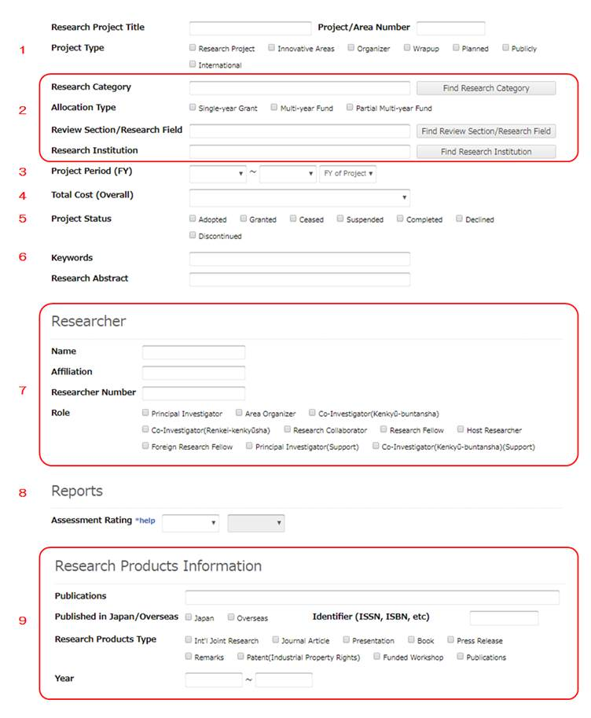

3.2 Анализ мирового опыта (передовых стран) по введению единой информационной системы по научным исследованиям и разработкам
Обеспечение доступа к знаниям и новой информации представляет собой общечеловеческое благо, которое необходимо для развития инноваций, создания возможностей и стимулирования открытости управления. Научная деятельность – это один из главных и основных источников знаний и соответственно инноваций.
При управлении научной деятельностью, одной из важных задач является применение результатов исследований для нужд общества и достижения прогресса в промышленности и бизнесе. В целях достижения аналогичных целей правительства стран запускают различные программы, предусматривающие создание консорциумов исследовательских организаций с предприятиями. Предполагается, что приведенный вид кооперации обеспечит заказчика научных исследований, который непосредственно внедрит результаты на благо внесения позитивных изменений.
В целях сближения ученых/научных коллективов и практики (промышленности, бизнеса, общества) необходимо создание унифицированной информационной системы, которая будет содержать сведения, сближающие различных стэйкхолдеров и объединяющих для достижения общей цели. Это могут быть не только научные организации, но и различные университеты, фонды, компании, институты развития и т.д. Унифицированная информационная система представляет собой взаимосвязанную совокупность средств, методов и персонала, которые используются для хранения, обработки и выдачи определенной информации с целью достижения поставленной цели.
Целью данного исследования является проведение анализа функциональности, способностей, тактик работы различных научных информационных систем, существующих в мировой практике. В рамках данного исследования автор приводит примеры различных мировых практик и обсуждает их подходы и роль в обеспечении связи между группой основных трех стэйкхолдеров или государство, наука и бизнес/промышленность.
В качестве задач исследования определено следующее:
- провести обзор функционала единых информационных платформ в таких странах, как Европейский Союз, Россия, США, Япония, Южная Корея, Сингапур, Германия, Швеция, Австралия;
- проанализировать их возможности и роль во взаимосвязи стэйкхолдеров (государство, наука и бизнес);
- выявить общие темы при реализации информационных систем по научным исследованиям;
- обсудить уроки применения единых систем для Казахстана.
В частности, автор проводит анализ таких платформ, как CORDIS – аккумулирует информацию по всем исследовательским проектам «Горизонт 2020» (Horizon 2020), финансируемым Европейским Союзом. Одна из самых крупных систем в мире. Также, автор приведет обзор Единой государственной информационной системы учета (ЕГИСУ) РФ в качестве примера локальной информационной системы учета, в определенной степени смежной с системой Казахстана. Также, автор исследует примеры США, Японии, Сингапура и Южной Кореи, Германии и Швеции (отдельно от CORDIS), а также Австралии как примеры единых информационных систем стран с высоким уровнем развития и инноваций.
В заключении исследования автор приводит определенные выводы и рекомендации.
3.2.1 Обзор общемирового опыта по введению единой информационной системы по научным исследованиям и разработкам в развитых странах с учетом интересов стэйкхолдеров из науки, бизнеса и производства
Программы Европейского союза «Горизонт 2020» и «Горизонт Европа» в качестве примеров международного сотрудничества
CORDIS – European Commission’s Research and Development Information Service.
CORDIS – это система, которая аккумулирует информацию по всем исследовательским проектам «Горизонт 2020» (Horizon 2020), финансируемым Европейским Союзом и фиксирующая информацию по взаимодействую науки и бизнеса. Связи между наукой и бизнесом могут быть отслежены через сбор данных от партнеров (Университет/Исследовательский Институт и представитель индустрии), вовлеченных в каждый проект [1].
Interreg представляет собой серию программ по стимулированию сотрудничества между регионами в Европейском Союзе и за его пределами, финансируемых Европейским фондом регионального развития [2].
Синергия между «Горизонт 2020» (H2020) и Interreg – картирование (mapping)
Инструмент картирования синергии H2020-Interreg представляет собой интерактивный отчет (панель мониторинга), объединяющий данные программ H2020 и Interreg [3].
Почему Interreg и H2020?
Каковы преимущества поиска информации в обеих программах?
Обе программы очень близки друг к другу с точки зрения тематических приоритетов и методов работы. H2020 и Interreg, финансируемые Европейским фондом регионального развития, являются одними из основных инструментов ЕС для содействия транснациональным исследованиям и инновационному сотрудничеству. На данный момент более 66 миллиардов евро было предложено на действия Horizon 2020 (65B) и Interreg (1,2B) с компонентом НИОКР в таких областях как политика, здравоохранение, энергетика, окружающая среда, транспорт и т.д. Основными целями инструмента картирования являются:
- продемонстрировать общие аспекты и ценность сближения программ НИОКР и территориального сотрудничества;
- дополнительно продемонстрировать, что обе программы могут предложить бенефициарам дополнительные возможности для расширения результатов своих исследований.
Этот инструмент дает наглядное представление об инвестициях ЕС в НИОКР на европейском, национальном и региональном уровне; какие области политики покрываются финансированием ЕС, а также покрывает информацию о реальных проектах и участниках.
Следуя подходу, ориентированному на данные, он включает в себя различные методологии классификации данных о проектах ЕС: региональный просмотрщик JRC, базы данных Interreg Keep.eu и H2020 R&I — портал возможностей финансирования и тендерных возможностей для программ ЕС [3].
Использование инструмента
Как отобрать и отфильтровать нужную информацию и о чем этот инструмент?
Доступна информация по: программам ЕС на 2014–2020 годы (Interreg и Hoizon 2020), политическим тематическим приоритетам и темам поиска партнеров, странам и регионам и т.д.
Инструмент предоставляет настройку фильтрации, где пользователь может выбирать и снимать набор определенных частей анализа, таких как [3]:
- инструмент картирования синергии охватывает, например: Горизонт 2020 (2014-2020 гг.) и конкретные программы Interreg (2014-2020 гг.), финансируемые за счет Европейского фонда регионального развития (ERDF), Инструмента помощи перед вступлением в ЕС (IPA), Европейским инструментом соседства (ENI) и другими источниками;
- тематические приоритеты политики, состоящие из грандиозных социальных целей и списка ключевых технологий, важных в контексте стратегии «Европа 2020» и инвестиций в НИОКР;
- подробные темы поиска партнеров, которые отражают области соответствующих социально-экономических вопросов и вопросов развития. Темы описаны на веб-сайте Keep.eu включая: энергоэффективность, изменение климата и биоразнообразие, ИКТ или туризм;
- оперативные программы: это национальные подробные планы, описывающие, как деньги расходуются в течение периода программы. Они могут быть составлены для конкретного региона или по общенациональной тематической цели (например, окружающая среда);
- информация если «участник в синергии», которая предоставляет информацию об участии данной организации как в программах Horizon 2020, так и в программах Interreg;
- страны и регионы ЕС: информация о классификации NUTS. Horizon 2020 — это программа исследований и инноваций ЕС, открытая для всего мира, поэтому в нее входят государства-члены ЕС, ассоциированные государства и участники из третьих стран. Программа Interreg фокусируется на сотрудничестве между государствами-членами ЕС, ассоциированными странами ЕС и странами-кандидатами, благодаря таким инициативам как Инструмент помощи перед вступлением (IPA) и Европейский инструмент соседства (ENI).
Как инструмент может быть использован для целей взаимосвязи государство-науки-бизнес?
Рассмотрим пример применения из области с ключевыми технологиями и рыночным потенциалом: фотоника. Например, я работаю инженером в большом космическом проекте, используя фотонику в качестве технологии.
Я хочу найти информацию о соответствующих проектах, финансируемых в этой области. Что мне делать? Я начинаю с ввода «фотоника» в строке поиска. Я столкнулся с проектом Interreg «STEPHANIE» по лазерной космической связи. Теперь я могу получить доступ ко всей информации о проекте: кто его финансировал (Interreg Europe), какова сумма, инвестированная из фондов ЕС (1,4 миллиона евро), кто участвует (восемь партнеров) и из какого региона (семь регионов в целом).
Я замечаю одного из партнеров, Photonics Bretagne, с которым мне бы очень хотелось установить контакт. Я нажимаю на эту организацию и теперь могу увидеть все проекты, связанные с фотоникой, в которых она принимала участие, как в рамках Interreg, так и в рамках Horizon 2020. Я также могу увеличить масштаб соответствующих проектов и получить дополнительную информацию. Это лишь пример, показывающий различную степень анализа инструмента картирования синергии H2020 & Interreg.
Программы и проекты «Горизонта 2020» обучают большое количество исследователей и вносят вклад в развитие человеческого капитала Европы, что, в свою очередь, делает ЕС привлекательным местом для выдающихся исследователей со всего мира [4].
H2020 также способствует укреплению человеческого капитал региона, уделяя особое внимание расширению прав и возможностей начинающих исследователей, способствуя налаживанию связей с другими европейскими и не европейскими университетами, участниками проектов. Это содействует созданию нового Европейского пространства исследований и инноваций. Мобильность молодых исследователей очень важна для создания научных сетей, развития исследовательского потенциала и достижения культуры интернационализации [5].
Единая государственная информационная система учета (ЕГИСУ) РФ в качестве примера локальной информационной системы учета
Единая государственная информационная система учета НИОКТР (далее ЕГИСУ НИОКТР) является основной системой управления научными исследованиями РФ, которые выполняются с привлечением государственного бюджета [6].
Система сформирована для целей управления научной/инновационной и научно-технической деятельностью, а также планирования и проведения экспертизы/оценки и мониторинга научно-исследовательских работ. Система позволяет сформировать единый подход к управлению научными исследованиями и экспериментальными разработками, выполненными за счет средств государственного бюджета.
Для использования системы, пользователю необходимо зарегистрироваться, где он получит роль «Физическое лицо» и определенные роли, соответствующие функциональности. В частности, он может выполнить поиск информации о результатах НИОКТР, представленной в системе.
Поиск осуществляется на странице поиска «Глобальный поиск» (рис. 3.2.1).
Рисунок 3.2.1. Пример страницы поиска в системе ЕГИСУ
По результатам поиска пользователь сможет получить информацию о типе документа (например, регистрационная карта и др.), виде НИОКТР (например, прикладная или фундаментальная и т.д.), вид результатов НИОКТР (например, изобретение, база данных, товарный знак и др.), владелец результатов научной деятельности (например, заказчик, исполнитель и др.). Результаты поиска отобразятся в виде перечня найденных информационных карт, соответствующих запросу. Также, представляется возможным увидеть информацию на карте страны (система геокодирования), например по определенному региону. Также, система представляет возможным получить аналитические данные с заданным набором информации (например, количество НИОКТР, объем финансирования, состояние правовой охраны – патентоспособные или нет) по всем проектам, зарегистрированным в системе (рис. 3.2.2) [7].
Рисунок 3.2.2. Пример системы ЕГИСУ по аналитическим данным
США – Национальный Институт Здравоохранения (National Institute of Health)
Национальный Институт Здравоохранения США использует исследовательскую программу «Все мы» (All of us) [8], которая аккумулирует данные в отрасли. Исследовательский центр All of Us хранит данные о состоянии здоровья самых разных групп участников со всех концов Соединенных Штатов.
Программа исследований «Все мы» создает набор данных, который поможет изменить будущее медицинских исследований, предоставляя исследователям обширные данные о здоровье различных групп населения, особенно тех, которые недостаточно представлены в биомедицинских исследованиях. Более 6600 исследователей в области здравоохранения используют этот единственный в своем роде набор данных для улучшения понимания здоровья и болезней, выявления возможностей сокращения неравенства и обеспечения более точных подходов к лечению.
В большинстве случаев здравоохранение подходит всем. Лечение, предназначенное для «среднего» пациента, может оказаться неэффективным для отдельных людей. Поставщикам медицинских услуг может быть сложно координировать помощь специалистов или получать доступ ко всей медицинской информации пациента. Исследователи могут тратить много времени и ресурсов на создание новых баз данных для каждого исследования.
Все мы работаем над улучшением здравоохранения посредством исследований. В отличие от исследований, посвященных одному заболеванию или группе людей, All of Us создает разнообразную базу данных, которая может содержать тысячи исследований по различным состояниям здоровья.
Это создает больше возможностей:
· Знать факторы риска некоторых заболеваний
· Выяснить, какие методы лечения лучше всего подходят людям разного происхождения.
· Предоставить людям возможность получить необходимые клинические исследования для их нужд
· Узнать, как технологии могут помочь сделать шаги, чтобы стать здоровее
Каталог исследовательских проектов (7 274 активных проекта)
«Все мы» — это часть новой эры, в которой исследователи, поставщики медицинских услуг, технологические эксперты, общественные партнеры и общественность работают вместе над развитием индивидуализированного медицинского обслуживания.
Каталог исследовательских проектов включает информацию обо всех проектах, которые в настоящее время существуют в Researcher Workbench, чтобы обеспечить прозрачность использования Workbench. В каждом проекте указывается, используются ли данные зарегистрированного уровня или контролируемого уровня.
Researcher Workbench [9] — это облачная платформа, на которой зарегистрированные исследователи могут получить доступ к данным зарегистрированного и контролируемого уровня. Его мощные инструменты поддерживают анализ данных и совместную работу. Интегрированные справочные и образовательные ресурсы предоставляются через Центр поддержки пользователей Workbench.
Данные
Данные извлекаются из нескольких источников [10]. Чтобы защитить конфиденциальность участников, удаляются личные идентификаторы, представляются совокупные данные и включается только сводная демографическая информация. Данные индивидуального уровня доступны для анализа в Researcher Workbench.
Рабочие пространства (Work Spaces)
Рабочее пространство — это место для доступа, хранения и анализа данных для конкретного исследовательского проекта. Зарегистрированные исследователи (researchallofus.org) используют рабочие пространства для доступа, хранения и анализа данных для конкретных исследовательских проектов. Рабочие пространства являются совместными и могут использоваться другими зарегистрированными исследователями в рамках проектной группы.
Один из подходов к использованию Workbench — создать рабочее пространство для всей работы вашей команды над конкретным исследовательским проектом. Затем воспользуйтесь конструктором когорт, чтобы выбрать группы участников на основе интересующих вас критериев. Получив когорту, вы можете использовать Dataset Builder для создания наборов данных, выбирая когорту и наборы понятий или коллекции медицинской информации, которые вы хотите изучить. Когда вы объединяете их вместе, они информируют ваш набор данных. После создания набора данных его можно экспортировать в Jupyter Notebooks для анализа.

Например, предположим, что мы хотим проанализировать использование препарата сертралин для лечения депрессии у женщин. Мы создадим когорту женщин, страдающих депрессией и принимающих сертралин, с помощью Cohort Builder, а также добавим ответы на опросы о психическом здоровье с помощью Concept Set Selector.
Данные можно объединить с помощью Dataset Builder, а затем экспортировать набор данных в Jupyter Notebook. В блокноте можно проводить анализы.

Структура доступа к данным
Ниже приведены некоторые ключевые моменты из структуры доступа к данным. Полный документ доступен для скачивания находится в открытом доступе [11].
Структура доступа к данным объясняет, как структурированы данные All of Us, какие шаги должны предпринять пользователи Research Hub для доступа к данным и как программа контролирует использование данных.
Структура является инклюзивной; это означает, что доступ к данным могут получить не только исследователи, связанные с учреждениями, но также гражданские и общественные ученые, а также отдельные лица, проводящие исследования за пределами академических медицинских центров.
Существует три уровня доступа к данным: общедоступный (вход не требуется); Зарегистрирован (требуется логин); и Контролируемый (требуется дополнительное одобрение).
Авторизация доступа к зарегистрированным и контролируемым уровням данных будет осуществляться на основе пользователей, а не проектов. Авторизованные пользователи получат «паспорт данных». Паспорт данных необходим для получения доступа к зарегистрированным и контролируемым уровням данных, а также для создания рабочих пространств для выполнения исследовательских проектов.
Каждый пользователь должен предоставить описание своего проекта. Это описание будет опубликовано и доступно для поиска в целях аудита и для облегчения взаимодействия с общественностью. Это способствует дальнейшему развитию приверженности программы партнерству и прозрачности с участниками (Инициатива точной медицины: принципы конфиденциальности и доверия) и соблюдению Закона о лекарствах.
Кодекс поведения пользователя при использовании данных
Строгая модель безопасности, требования к доступу и политика использования данных помогают гарантировать, что данные защищены и используются этично и ответственно. Чтобы получить доступ к зарегистрированным и контролируемым уровням Researcher Workbench, исследователи должны зарегистрироваться в программе, подтвердить свою личность, пройти обучение по ответственному проведению исследований и согласиться с кодексом поведения для ответственного использования данных. Они также должны рассказать, в чем заключается их проект и как они планируют использовать данные.
Ниже приведены некоторые ключевые положения Кодекса поведения пользователей при использовании данных исследовательской программы All of Us. Полный текст соглашения доступен для скачивания в открытом доступе [12].
Кодекс поведения пользователей данных описывает, как данные Исследовательской программы «Все мы» могут и не могут использоваться в исследовательских проектах. Для исследователей это включает, помимо прочего, согласие со следующими условиями.
Как «Авторизованный пользователь данных» Исследовательской программы «Все мы» Исследователь соблюдает правила [12]:
· Всегда соблюдает конфиденциальность участников исследования.
· НЕ будет использовать или раскрывать какую-либо информацию, которая напрямую идентифицирует одного или нескольких участников.
· Использует данные «Все мы» только в целях биомедицинских или медицинских исследований.
· Предоставляет содержательное и точное описание цели исследования каждый раз, когда создает рабочее пространство Исследовательской программы «Все мы».
· Берет на себя полную ответственность за любые внешние данные, файлы или программное обеспечение, которые импортирует в All of Us Researcher Workbench, и за последствия их использования.
· НЕ делится своей информацией для входа в систему с кем-либо, включая других авторизованных пользователей данных Исследовательской программы «Все мы».
· НЕ пытается связаться с участниками исследовательской программы «Все мы».
· НЕ делает снимки экрана и не пытается каким-либо образом копировать, загружать или иным образом удалять какие-либо данные уровня участника из All of Us Researcher Workbench.
· НЕ публикует или иным образом распространяет какие-либо данные на уровне участников из базы данных Исследовательской программы «Все мы».
· НЕ публикует или иным образом распространяет какие-либо данные или совокупную статистику, относящуюся к менее чем 20 участникам, если это прямо не разрешено условиями Политики распространения данных и статистики для всех нас.
· НЕ перераспределяет и не публикует данные зарегистрированного или контролируемого уровня.
· НЕ пытается связать данные исследовательской программы зарегистрированного или контролируемого уровня «Все мы» на уровне участников с данными из других источников.
· НЕ использует данные All of Us Research Program или какую-либо часть Research Hub в маркетинговых целях.
· НЕ заявляет, что Исследовательская программа «Все мы» одобряет какое-либо исследование, если только такое одобрение не предоставлено в письменной форме Исследовательской программой «Все мы».
Япония и примеры информационных систем
Японское агентство науки и технологий (JST)
J-GLOBAL это комплексный шлюз, связывающий несколько научных и технологических баз данных. J-GLOBAL поддерживает генерацию идей, основанную на концепции «связывание, расширение, зажигание». Cервис предоставляет основную и обобщенную информацию об исследователях, исследовательских работах, патентах, исследовательских проектах, организациях, технических терминах, химических веществах, генах, материалах и исследовательских ресурсах. Связывая введенную информацию, система предоставлят возможности совершать неожиданные открытия и получать знания из разных областей из высококачественной научно-технической информации внутри и за пределами JST.
Веб-сайт J-GLOBAL имеет интерфейс, удобный как для мобильных телефонов, так и для ПК. Основные функции J-GLOBAL: связывание, расширение, интенсификация [13].
Связывание: J-GLOBAL объединяет информацию, которая представляет собой ключ к исследованиям и разработкам. Например, связывание статей и патентов с людьми (авторами и изобретателями) позволяет извлекать последовательность информации. Это полезно для совершения новых открытий и получения новой информации.
Расширение: Система позволяет осуществлять поиск аналогичного контента посредством ссылок на внешние сайты. Это помогает получать информацию из разных областей и открывать концепции, выходящие за рамки специализаций.
Интенсификация: Благодаря постоянному взаимодействию и расширению J-GLOBAL предлагает неожиданные подсказки для решения проблем и подает искру(-ы) для новых идей.
J-GLOBAL – полезный инструмент для кого [13]:
· персонала, участвующего в налаживании сотрудничества между промышленностью, научными кругами и правительством;
· сотрудников публичной библиотеки, ответственных за материалы в базе;
· исследователей и ответственных за планирование науки;
· менеджеров;
· финансовых представителей;
· студентов, пишущих диссертации и исследования.
J-GLOBAL – полезный инструмент, если вы хотите найти [13]:
· подсказки для решения технических проблем;
· информацию о применении определенной технологии в различных областях;
· технологические тенденции других компаний в той же отрасли;
· достоверные доказательства определенных достижений, найденных в поисковой системе;
· исследователей, имеющих право на участие в совместных исследованиях;
· исследователей, проводящие аналогичные исследования;
· основную информацию об исследованиях и справочную литературу;
· потенциально коммерциализируемое исследование в определенном университете.
Система имеет «Окно поиска», где можно осуществлять поиск по ключевым словам, или же осуществлять расширенный поиск (Рисунок 3.2.3) [13]. Система также имеет раздел «Новости» или приводит определенные уведомления.
Рисунок 3.2.3. Пример поиска в системе J-Global
По ключевым словам возможно производить поиск различных материалов, например, проект, ученого, работающего в определенной сфере или патент (см. выше на рисунке – выпадающий список дает возможность выбора области поиска).
Например, мы осуществили поиск по теме COVID и исследовательский проект (рисунок ниже) и получили список проектов, финансируемых за счет различных источников. Система также позволит проверить имеющие патенты, публикации и т.д. по заданному ключевому слову. Если вы компания, работающая с определенной технологией, вы сможете получить информацию, какие проекты и кем велись по данному направлению, посмотреть краткий отчет исследования и связаться с заказчиком и/или исполнителем проекта.
При нажатии на проект, мы получаем определенную информацию о проекте, включая заказчика и владельца результатов, имена ученых, работающих по проекту, а также короткий отчет по проекту (если он был завершен) (рисунок ниже). Если вы хотите проверить все проекты (включая патенты, публикации и т.д.) ученного, работающего над данным проектом, то вы можете сделать это нажав на имя человека. Аналогично примеру по проекту, возможно провести поиск по патентам, публикациям и т.д.
Информация об исследователях в J-GLOBAL основана на информации, зарегистрированной в Researchmap [14] самими исследователями или их дочерними учреждениями.
Researchmap всесторонне собирает и предоставляет данные об исследовательских учреждениях, исследователях и т. д., относящиеся к университетам и государственным учреждениям Японии.
Researchmap представляет собой полный список исследователей в Японии и считается крупнейшей базой данных с информацией об исследователях в Японии. Услуги Researchmap предоставляются и управляются Японским агентством науки и технологий (JST).
Researchmap позволяет пользователям искать исследователей по их области исследований, связанным с ними организациям или ключевым словам исследований, а также получать доступ к различной информации, такой как профили исследователей и их достижения. Кроме того, исследователи могут легко создать свою собственную исследовательскую веб-страницу, и существует ряд полезных инструментов, которые помогают в этом, например, сообщества исследователей, кабинетные файлы для распространения материалов и блоги исследователей.
База данных KAKEN
База данных грантов для научных исследований (KAKENHI) состоит из «KAKEN — Поиск исследовательских проектов», которая позволяет искать исследовательские проекты, проводимые Фондом грантов для научных исследований, и «KAKEN — Поиск исследователя», который создается путем интеграции «KAKEN - Search Research Projects» и других баз данных и позволяет искать информацию об исследователях [15].
Исследовательские проекты
«KAKEN — Search Research Projects» — это база данных, в которой хранится информация о грантах на научных исследованиях, предоставленных Министерством образования, культуры, спорта, науки и технологий (MEXT) и Японским обществом содействия развитию науки. Он включает в себя: исходную информацию на момент принятия (принятые проекты); резюме исследовательских продуктов (отчет о статусе исследований, годовой отчет об исследованиях и итоговое резюме отчета); Заключительный отчет об исследовании; и отчет о самооценке.
Поскольку гранты на научные исследования широко предоставляются по всем академическим дисциплинам, эта база данных позволяет искать самую свежую информацию об исследованиях, проводимых в Японии по всем дисциплинам.
Исследователи
«KAKEN — Исследователь поиска» генерируется путем механической интеграции информации об исследователях и исследовательских продуктах с использованием номеров исследователей, DOI и т. д., извлеченных в основном из «KAKEN — Проекты поисковых исследований» и частично из «Базы данных институциональных репозиториев (IRDB)», а также «Статьи CiNii», «researchmap» и «JaLC DOI».
Страница исследователя, отображаемая в «KAKEN — Исследователь поиска», генерируется на основе номера исследователя [15].
Таким образом, для поиска должны быть выполнены следующие условия. Исследователь имеет номер исследователя KAKEN. Исследовательский проект, принятый под номером исследователя, указан в «KAKEN – Поиск исследовательских проектов».
Рассмотрим параметры проведения расширенного поиска в базе данных KAKEN (рисунок 3.2.4) [15].

Рисунок 3.2.4. Пример поиска в системе KAKEN
«Тип исследовательского проекта» - автор может выбрать несколько типов исследовательских проектов. Существует несколько методов ввода: можно проводить поиск по области исследования или по исследовательским учреждениям. Условие поиска «Исследовательское учреждение» означает поиск «всех исследователей, участвующих в исследовательских проектах, проводимых в указанном учреждении». Можно производить поиск по имена исследователя или же результату научной деятельности в подразделе Research Product Information. Автор может искать исследовательские проекты, содержащие исследовательские продукты, соответствующие его критериям поиска. Тип исследовательского продукта: Автор может выполнить поиск по отмеченным галочкам типам исследовательских продуктов. Если отмечено более одного типа, будут включены исследовательские продукты любого из этих типов. (Критерии поиска для типа исследовательского продукта будут пересекаться с другими элементами исследовательского продукта и искать проекты, чьи исследовательские продукты соответствуют обоим критериям).
Каждый из следующих элементов может быть найден при поиске исследовательских проектов, содержащих исследовательские продукты, которые также соответствуют типу исследовательского продукта: публикации, место опубликования (в Японии или за рубежом), идентификатор, международные совместные исследования, имя страны, партнерское учреждение, год.
В качестве органа управления наукой, Япония также имеет Японское общество содействия науке (The Japan Society for the Promotion of Science - JSPS) [16].
Японское общество содействия науке (JSPS), или сокращенно от японского Gakushin, является независимым административным учреждением, созданным в соответствии с национальным законом с целью содействия развитию науки во всех областях естественных и социальных наук и гуманитарные науки. JSPS играет ключевую роль в управлении широким спектром научных и академических программ Японии. Работая в широких рамках государственной политики, направленной на содействие научному прогрессу, JSPS реализует свои программы гибко с учетом потребностей участвующих ученых.
JSPS был основан в 1932 году как некоммерческий фонд на пожертвования, предоставленные императором. JSPS стала квазиправительственной организацией в 1967 году под эгидой Министерства образования, науки, спорта и культуры (Monbusho), а с 2001 года — под эгидой Министерства образования, культуры, спорта, науки и технологий (Monbukagakusho). В течение этого 70-летнего периода JSPS непрерывно работал над разработкой и реализацией широкого спектра отечественных и международных научных программ. 1 октября 2003 г. JSPS вступил в новый этап с преобразованием в независимое административное учреждение, в котором оно будет стремиться оптимизировать эффективность и результативность своего управления, чтобы улучшить качество услуг, которые оно предлагает отдельным исследователям, университетам и научно-исследовательским институтам.
Сотрудничество университетов и промышленности в области исследований. Социально-прикладные научные связи и сотрудничество [16].
Миссия JSPS - развитие науки. В прошлом академическое сообщество было в центре продвижения научных исследований, но теперь оно все больше движимо разнообразными ожиданиями и требованиями со стороны промышленности, а также общества. Это привело к острой необходимости создать платформу, на которой передовые исследователи из академических кругов и промышленности могли бы встречаться и уделять время обмену мнениями и информацией, а также обмениваться отчетами о своей исследовательской деятельности, тем самым стимулируя друг друга в решении будущих задач, проблем науки и техники.
На этом фоне JSPS запустил Программу совместных исследований университетов и промышленности, которая в 2020 году работает в соответствии со следующей концептуальной схемой. «Чтобы способствовать развитию исследований в Японии, создается новая платформа для передовых исследователей в академических кругах и промышленности, которые по собственному желанию сотрудничают в областях и способами, которые соединяют два сектора в поисках важных, но недостаточно освещенных тем исследований и социальных проблем. На этой платформе исследователи из двух секторов преодолевают барьеры организации и сферы деятельности, объединяя результаты, возникшие в результате научных исследований, с учетом потребностей современного общества. Такие совместные исследования университетов и промышленности проводятся после проверки новых траекторий исследований»[1].
Совместные исследовательские комитеты университетов и промышленности (срок действия: 5 лет)
JSPS поддерживает программы сотрудничества снизу-вверх, основанные на свободных идеях передовых исследователей из академического и промышленного секторов. Путем создания комитетов по совместным исследованиям университетов и промышленности создается платформа, позволяющая им вовлекать друг друга в обмен мнениями и информацией по фундаментальным, прикладным и развивающим исследованиям в соответствующих областях специализации, и все это в свободной и неформальной атмосфере. Эта программа, начатая еще в 1933 году, за прошедшие годы привела к созданию около 200 комитетов. По состоянию на апрель 2020 года активно действовало 50 комитетов (всего 3700 членов: 2200 от научных кругов, 1500 от промышленности).
Комитеты сотрудничества университетов и промышленности (срок действия: 5 лет)
JSPS учредил эти комитеты в качестве форумов, проводимых членами комитетов сотрудничества университетов и промышленности, которые согласны с принципами и целями работы JSPS. Эти форумы, реализуемые автономно и самостоятельно, способствуют развитию инициируемой участниками деятельности снизу-вверх, ориентированной на социальные проблемы. Плоды такого свободного и неформального обмена идеями и информацией между участниками форума во многом способствуют развитию научных исследований. Участники не только несут ответственность за деятельность форума, но и должны нести ответственность за ее результаты.
Южная Корея – Национальный информационный сервис науки и технологий (National Science & Technology Information Service) (NTIS)
NTIS – это национальный портал исследований и разработок, который объединяет и предоставляет информацию, включая программы, проекты, человеческие ресурсы и результаты национальных программ НИОКР [17]. Он открыт для всех граждан, интересующихся научными и технологическими знаниями и информацией.
В целом система аккумулирует информацию о научно-исследовательских проектах, финансируемых различными министерствами и институтами и исполняемыми учеными в стране (рисунок выше) [17]. Основными функциями программы является сервис анализа данных, интеллектуальное развитие, ориентированное на пользователя, коллаборационная система обмена знаниями, распространение результатов научной деятельности, совершенствование системы поддержки R&D. Основными пользователями системы являются исследователи, политики/государство, общество.
Основной целью портала является учреждение научно-обоснованной интеллектуальной операционной системы для акселерации науки и технологических инноваций. Конечной целью всей работы портала является представление двигателя инновационного прогресса через распространение научно-обоснованных данных, знаний, опыта и кооперации.
Таблица 3.2.1. Стратегия портала NTIS
|
3 основные стратегии |
8 задач по реализации |
|
1. Развитие интеллектуальных NTIS посредством открытия, совместного использования и сотрудничества. |
1.1. Укрепление услуг анализа данных с учетом спроса 1.2. Создание служб обмена знаниями с участием пользователей 1.3. Укрепление служб общественного опыта для распространения национальных достижений в области НИОКР 1.4. Простое и удобное развитие интеллектуальной собственности NTIS |
|
2. Развитие поддержки национального цикла НИОКР |
2.1. Усиление национальной поддержки принятия решений в области НИОКР 2.2. Расширение услуг по предоставлению научно-технических статистических данных |
|
3. Создание облачной интегрированной системы управления инфраструктурой |
3.1. Создание информационных ресурсов NTIS путем конвертации в облако 3.2. Создание базы для интеллектуальной аналитики данных |
Рисунок 3.2.5. Идеология портала NTIS
Краткие детали по функционалу портала
Портал повышает эффективность национальных инвестиций в НИОКР и продуктивность исследований за счет обмена и совместного использования информации, связанной с национальными программами НИОКР, а также информации о науке и технологиях, которые отдельно управляются министерствами и институтами [17].
Повышение эффективности национальных инвестиций в НИОКР
Проект поддерживает научно обоснованное планирование НИОКР, предоставляя справочные данные для разработки политики, предоставляет прозрачную информацию о национальной программе НИОКР и оценках эффективности институтов, а также предотвращает дублирование расходов в национальных бюджетах на НИОКР.
Поддержка повышения продуктивности исследований
Проект предоставляет рекомендации в отношении информации, настроенной пользователем, поддерживает управление результатами НИОКР, а также предоставляет текущий статус национальных НИОКР, индивидуальный информационный пакет, последние тенденции исследований и аналитическую среду национальных НИОКР в режиме реального времени.
Таблица 3.2.2. Основной сервис портала [17], [18]
|
Описание |
Предмет |
|
Национальная система управления жизненным циклом информации о НИОКР
|
|
|
Среднесрочный и долгосрочный план развития науки и технологий (НИТ), программы НИОКР и бюджет |
Предоставляет комплексную информацию, касающуюся всего процесса программы НИОКР, от планирования политики до бюджета НИОКР и оценки. |
|
Оценка национальных программ НИОКР и финансируемых государством научно-исследовательских институтов |
Предоставляет информацию об оценке эффективности национальных НИОКР (оценка программных и финансируемых государством научно-исследовательских институтов). |
|
Предварительное технико-экономическое обоснование НИОКР |
Предоставляет исчерпывающую информацию о технико-экономическом обосновании национальных программ НИОКР, включая соответствующие законы, руководящие принципы и отчеты. |
|
Участие в проекте
|
|
|
Призывы к национальным программам и проектам НИОКР. |
Собирает и предоставляет информацию о национальных программах НИОКР/проектах от правительственных ведомств и институтов управления проектами. |
|
Анализ повторяющихся и похожих проектов. |
Обеспечивает сравнительный анализ сходства между зарегистрированными предложениями и проектами НИОКР, проводимыми каждым отделом, или проектами, зарегистрированными другими пользователями. |
|
Рекомендации по классификации стандартов науки и техники. |
Рекомендует классификацию национальных стандартов науки и техники. |
|
Запрос о правилах НИОКР |
Предоставляет информацию о национальных правилах НИОКР и предоставляет онлайн-консультации. |
|
Стандартная служба управления информацией (SIMS)
|
Поддерживает менеджера программы и менеджера по исследованиям в регистрации и использовании национальной стандартной информации о НИОКР. |
|
Информация о санкциях. |
Поддерживает поиск и регистрацию информации, связанной с ограничениями на участие в национальных проектах НИОКР и денежными санкциями. |
|
Запрос результатов оценки проекта |
Поддерживает запросы по запросу исторической информации промежуточных/окончательных/отслеживаемых результатов оценки национального проекта НИОКР. |
|
Информация об исследователе
|
|
|
Национальные участники НИОКР |
Обеспечивает группу исследователей в области науки и технологий, ученых и специалистов для национальной программы НИОКР. |
|
Регистрационный номер исследователя |
В целях защиты личной информации об исследователях, участвующих в национальных проектах исследований и разработок, NTIS выдает регистрационные номера ученых и инженеров. |
|
Предложение кандидата на оценку. |
Повышает объективность и справедливость оценки национальных проектов НИОКР за счет предоставления кандидатов на должность оценщика. |
|
Управление исторической информацией |
Предоставляет личную информацию, используемую для поиска экспертов для национальных исследований и разработок или назначения оценочных комитетов. |
|
Рекомендация комитета |
Рекомендует членам комитетов Министерства науки и технологий, информации и коммуникаций широкий круг экспертов. |
|
Информация НИИ
|
|
|
Институты, участвующие в национальных НИОКР. |
Предоставляет анализ информации об институтах, участвующих в национальной программе НИОКР. |
|
Корпоративная поддержка информации о НИОКР
|
Поддерживает малый и средний бизнес в целях содействия активному использованию национальной информации о НИОКР. (Приобретение базовых знаний для участия в национальных проектах НИОКР, исследователя, научно-исследовательского института, программы поддержки исследований для инициатив сотрудничества и т. д.) |
|
Основной анализ конкурентов |
Предоставляет информацию о отечественных и зарубежных технологических конкурентах, связанных с запатентованной технологией, путем взаимодействия с внешними данными. |
|
Информация о результатах исследований и разработок
|
|
|
Результаты национальных исследований и разработок. |
Предоставляет функцию для всестороннего поиска информации о результатах национальных исследований и разработок. |
|
Регистрация результатов НИОКР |
Обеспечивает комплексное руководство по регистрации и депонированию различных результатов исследований, возникающих после выполнения национальных проектов НИОКР, и поддерживает все зарегистрированные результаты исследований одновременно. |
|
Поддержка проверки документов/патентов. |
Обеспечивает поддержку для проверки документов SCI(E) и отечественных патентов, представленных в результате/результатах национальной программы НИОКР. |
|
Превосходные результаты национальных исследований и разработок. |
Обеспечивает комплексное руководство по регистрации и депонированию различных результатов исследований, возникающих после выполнения национальных проектов исследований и разработок, и поддерживает все зарегистрированные результаты исследований одновременно. |
|
Использование данных |
|
|
Статистика науки и технологий |
Управляет и предоставляет более 150 интегрированных показателей науки и техники, включая основные статистические данные по науке и технологиям, оценку технической компетентности, прогнозы по науке и технологиям, оборудование исследовательских центров, подробный статистический анализ и т.д. |
|
Запрос данных о НИОКР. |
Позволяет пользователям искать и извлекать национальные данные о НИОКР из базы данных NTIS. |
|
Анализ НИОКР на основе системы категорий. |
Обеспечивает различные типы анализа данных, например, национальные тенденции инвестиций в НИОКР на основе стандартной системы классификации науки и техники. |
|
Поддержка использования научных данных. |
Делится научными данными, хранящимися в каждом институте, и состоянием экспериментальных данных, полученных с помощью оборудования в крупных исследовательских центрах. |
|
OpenAPI |
Предоставляет общедоступные интерфейсы прикладного программирования, позволяющие программистам разрабатывать программы с использованием национальных данных исследований и разработок и сервисной платформы. |
|
R&D Plus |
|
|
Тенденции политики/технологий |
Собирает и предоставляет различную информацию о научно-технической политике и технологических тенденциях. |
|
НИОКР по задачам |
Предоставляет информацию по темам и комплексную информацию о национальных НИОКР, связанных с национальными и социальными проблемами. |
|
Карта исследовательской экосистемы |
Визуализирует сеть сотрудничества между исследователями или исследовательскими институтами в форме «карт знаний». Кроме того, предоставляет результаты анализа, чтобы пользователи могли сразу понять состояние национальных проектов НИОКР. |
|
Информация о передаче/коммерциализации технологий. |
Предоставляет информацию о передаче и коммерциализации технологий, например о государственной политике, а также данные от поставщиков информации о торговле технологиями. |
|
Поиск курса. |
Ищет информацию о курсах, которые исследователь хочет пройти и предоставляет прямые ссылки для регистрации. |
|
Жизненный цикл исследователя |
Предоставляет персонализированную информацию в соответствии с жизненным циклом каждого исследователя. |
Ниже представлен пример получения информации о проектах по заданной теме [17]. Открытый доступ не представил возможным получить более подробную информацию, описанную в качестве функционала и сервиса портала.
Рисунок 3.2.6. Пример поиска проекта и выдаваемой информации на портале NTIS
Сингапур – Интеграционная Система Управления Грантами (Integrated Grant Management System)
IGMS – это интегрированная система управления грантами. Система предназначена для исследователей и менеджеров по грантам, которые участвуют в грантах NRF, MOH, MOE и A*STAR [19].
Национальный исследовательский фонд (National Research Foundation - NRF)
Национальный исследовательский фонд (НРФ), созданный 1 января 2006 года, является подразделением канцелярии премьер-министра. NRF устанавливает национальное направление исследований и разработок (НИОКР), разрабатывая политику, планы и стратегии в области исследований, инноваций и предпринимательства. Он также финансирует стратегические инициативы и наращивает возможности исследований и разработок, воспитывая исследовательские таланты. NRF стремится превратить Сингапур в динамичный центр исследований и разработок, который будет способствовать развитию наукоемкой, инновационной и предпринимательской экономики; и сделать Сингапур магнитом для передовых технологий в области науки и инноваций.
Министерство здравоохранения (Ministry of Health MOH)
Миссия Министерства — способствовать хорошему здоровью и снижению заболеваемости, обеспечить доступ к качественному и доступному медицинскому обслуживанию и стремиться к совершенству в медицине.
Министерство образования (Ministry of Education)
Министерство образования руководит разработкой и реализацией политики в области образования. Он контролирует развитие и управление государственными и финансируемыми государством начальными школами, средними школами, младшими колледжами и централизованным институтом. Он также регистрирует частные школы.
Агентство науки, технологий и исследований (The Agency for Science, Technology and Research A*STAR)
Агентство по науке, технологиям и исследованиям (A*STAR) является ведущим агентством Сингапура по исследованиям и разработкам в государственном секторе, возглавляющим экономически ориентированные исследования для продвижения научных открытий и разработки инновационных технологий. Посредством открытых инноваций мы сотрудничаем с нашими партнерами как в государственном, так и в частном секторах на благо общества [19].
Как научно-техническая организация, A*STAR устраняет разрыв между академическими кругами и промышленностью. Наши исследования способствуют экономическому росту и созданию рабочих мест в Сингапуре, а также улучшают жизнь людей, способствуя социальным благам, таким как улучшение результатов в здравоохранении, городской жизни и устойчивости. Деятельность A*STAR в области исследований и разработок охватывает биомедицинские науки, физические науки и инженерию.
В целом IGMS аккумулирует информацию о существующих/открытых грантах и активных и завершенных проектах [19]. При определенном запросе, например COVID, возможно получить список проектов, как завершенных, так и действующих с определенными деталями по проекту, включая даты, идентификатор и абстракт (Рисунок 3.2.7).
|
|
|


Рисунок 3.2.7. Пример запроса и получаемой информации на портале IGMS
Сингапур, как одна из наиболее динамично-развивающихся стран на основе инноваций, уделяет большое внимание развитию инноваций за счет НИОКР. Национальный исследовательский фонд Сингапура (NRF), созданный 1 января 2006 года, является подразделением канцелярии премьер-министра. NRF устанавливает национальное направление исследований и разработок (НИОКР), разрабатывая политику, планы и стратегии в области исследований, инноваций и предпринимательства. Он также финансирует стратегические инициативы и наращивает возможности исследований и разработок, воспитывая исследовательские таланты.
В 2010 году стратегия НИОКР Сингапура была расширена и теперь включает «Инновации и предпринимательство» с целью развития наукоемкой, инновационной и предпринимательской экономики [20]. Это отражает растущее внимание к переводам, коммерциализации и инновационным стратегиям, которые используют растущий поток перспективных результатов исследований и поддерживают предприятия. О первом плане RIE («RIE2015») было объявлено в 2010 году, и с тех пор продолжаются развертывания последующих пятилетних планов RIE [21].
Согласно RIE2025 правительство Сингапура будет поддерживать инвестиции в исследования, инновации и предпринимательство на уровне около 1% ВВП в 2021-2025 годах (25 миллиардов долларов США). Это отражает устойчивую и долгосрочную приверженность правительства Сингапура исследованиям и разработкам на протяжении экономических циклов.
При разработке плана RIE2025 мы определили три ключевых стратегических направления:
· расширить миссию RIE для решения более широкого спектра национальных потребностей;
· обогатить научную базу;
· масштабировать платформы для стимулирования внедрения технологий и укрепления инновационного потенциала предприятий.
Усилия RIE организованы по четырем стратегическим направлениям, поддерживаемым тремя сквозными горизонталями [22].
Поддерживающие горизонтали включают в себя:
- академическое исследование (создание надежной базы исследовательских возможностей и вершин международного мастерства);
- рабочая сила (развивать мощный поток талантливых специалистов в области исследований и инноваций);
- инновации и предпринимательство (ускорение корпоративных инновации).
Стратегические направления включают в себя:
- производство, торговля и связь. Использование НИОКР для укрепления позиций Сингапура как глобального центра бизнеса и инноваций для передового производства и связи.
- здоровье и потенциал человека. Преобразовывать и защищать здоровье, развивать человеческий потенциал и создавать экономическую ценность для Сингапура.
- решения для городов и устойчивое развитие. Обновление и построение пригодного для жизни, устойчивого и экономически динамичного города завтрашнего дня.
- умная нация и цифровая экономика. Развивать технологическое лидерство для реализации амбиций «умной нации» и закрепить позицию Сингапура как надежного центра цифровых инноваций.
Германия – Немецкая информационная система проектов (GEPRIS – German Project Information System)
GEPRIS – это двуязычная (немецкий/английский) база данных о мерах финансирования, администрируемая DFG (Фонд Науки Германии) [23]. Информация варьируется от содержания и целей проекта до участвующих исследователей и исследовательских учреждений.
Что касается области исследования, программа охватывает медицину, социальные и гуманитарные науки, инжиниринг, математика, физика, геонаука, компьютерные науки и т.д. (ниже приведен развернутый список дисциплин).
|
Рисунок 3.2.8. Пример запроса и получаемой информации на портале GEPRIS
Возможно использовать алфавитные указатели людей и мест, чтобы узнать, какие люди и какие учреждения, отсортированные по местоположению, перечислены в GEPRIS (Рисунок 8). Возможно отследить все научные проекты, в которых участвовал определенный ученный. GEPRIS предоставляет компактную информацию о названии и теме проекта, предметной области, участвующих исследовательских учреждениях и людях, которые участвуют или участвовали в проекте на определенных должностях. Каждому проекту присваивается уникальный номер проекта. Указывая этот номер, можно однозначно ссылаться на проект в подтверждениях финансирования. Наконец, на вкладке результатов проекта GEPRIS предоставляет краткое изложение основных выводов завершенных проектов DFG. Просмотр результатов также включает список избранных публикаций, связанных с проектом, с прямыми ссылками, если они доступны в Интернете [23].
|
|
Поиск: Например, мы хотим проверить завершенные исследования по тематике COVID и с помощью фильтров настраиваем нужные нам параметры. Мы можем настроить фильтр на проекты, которые имеют финальные отчеты. Мы получаем список проектов, по которым можем получить необходимую информацию, включая абстракт, имена ученых, работавших над проектом, основные результаты и отчет.
Швеция – Национальная База Данных Swecris
Swecris [24] - это национальная база данных Швеции, где вы можете увидеть, как участвующие организации, финансирующие исследования, распределяли свои средства среди исследователей в Швеции. База данных содержит данные как государственных, так и частных организаций, финансирующих исследования. Swecris управляется Шведским исследовательским советом в тесном сотрудничестве с управленческой командой, состоящей из представителей шведских финансирующих организаций и высших учебных заведений. Некоторые финансирующие организации предоставляют данные в Swecris постоянно, тогда как другие делают это раз в год.
Финансирующие органы, предоставляющие данные еженедельно, начиная с 2008 года:
· Формас (Шведский исследовательский совет по устойчивому развитию)
· Forte (Шведский исследовательский совет по здоровью, трудовой жизни и благосостоянию)
· Riksbankens Jubileumsfond (для развития гуманитарных и социальных наук)
· Шведский исследовательский совет
· Vinnova – Шведское агентство инноваций
· Шведский фонд сердца и легких (данные включены по состоянию на 2018 г.)
Финансирующие органы, предоставляющие данные один раз в год, начиная с 2008 года:
· Шведское энергетическое агентство (с 2015 г. включены личные имена)
· Институт оценки рынка труда и образовательной политики (IFAU)
· Фонд исследований стран Балтии и Восточной Европы
Нет текущих обновлений от следующих организаций:
· Фонд Рагнара Седерберга (данные доступны за 2011–2017 гг.)
· Шведское национальное космическое агентство (данные доступны за 2009–2017 гг.)
Предметная классификация
Исследовательские проекты в базе данных классифицированы по темам в соответствии со стандартом классификации Статистического управления Швеции от 2011 года. Информация о стандартах классификации доступна в открытом доступе, однако информация только на шведском языке [25].
В целом, в системе можно классифицировать проекты по дате финансирования, по финансирующей организации, языку.
Информацию в системе можно разделить на пять типов грантов.
· Исследовательские проекты. Поддержка исследовательских проектов.
· Гранты на должность или стипендии: Поддержка карьеры отдельного исследователя и долгосрочного закрепления в исследовательской системе.
· Поддержка исследовательской среды: гранты малым или крупным исследовательским предприятиям. Сюда также включена поддержка для стимулирования национального сотрудничества между различными субъектами и областями исследований. Этот вид финансирования также может включать поддержку создания центров или гранты на набор выдающихся исследователей для укрепления кафедры, университета или аспирантуры.
· Исследовательская инфраструктура: Поддержка планирования, создания и эксплуатации исследовательской инфраструктуры. Сюда также входят членские взносы в международную исследовательскую инфраструктуру.
· Международное сотрудничество: Поддержка международного сотрудничества в области исследований и интернационализации исследований.
Данные в базе
Данные включают персональные данные и идентификаторы личности. Имя руководителя проекта, ответственного за заявку, отображается в базе данных. В некоторых случаях также включаются имена других участников проекта. Фактические данные классифицируются по стандарту CERIF. CERIF (Общий европейский формат исследовательской информации) — это европейский стандарт данных для управления исследовательской информацией, такой как проекты, лица, организации, публикации, патенты, продукты и услуги. Все фактические данные в Swecris классифицированы согласно CERIF [26].
Система охватывает данные по следующим дисциплинам: естественные науки, инжиниринг и технологии, медицина, сельское хозяйство и ветеринария, социальные и гуманитарные науки. Рисунок 9 также представляет страницу поиска и выдает суммированные данные по запрашиваемой теме (например, сумма финансирования по годам в разрезе по дисциплинам).
|
|
Рисунок 3.2.9. Пример запроса и получаемой аналитической информации на портале CERIF
Результаты поиска будут выглядеть как на рисунке 3.2.10. Система на предоставляет более детальную информация по проектам (или как минимум при исследовании данной базы данных, мы не смогли получить доступ к более детальной информации).
Рисунок 3.2.10. Пример получаемой информации о проекте на портале CERIF
Австралия – Сервис исследовательских грантов (Research Grant Services - RGS)
Портал поиска грантов Сервиса исследовательских грантов (RGS) предоставляет подробную информацию о грантах на исследования, управляемых через Систему управления исследованиями (RMS) Австралийского исследовательского совета (Australian Research Council – ARC) [27]. Сюда входит подробная информация как о исследовательских грантах, финансируемых ARC, так и о грантах других организаций, предоставляющих гранты.
ARC предоставляет услуги по управлению грантами другим организациям, финансирующим гранты, с 2020 года. Портал данных RGS отображает информацию о финансировании после инициирования гранта.
Поиск проектов
Возможно ввести несколько условий поиска в поле запроса. Например, ввести имя исследователя, область исследования, имя получателя гранта (допускаются сокращенные версии) и/или название любой участвующей организации.
Результаты поиска (рисунок 3.2.11) будут содержать все введенные слова (это аналогично использованию соединителя «И»). При поиске будет предпринята попытка нечеткого сопоставления поисковых терминов, например, единственного числа, множественного числа, прописных и строчных букв, связанных слов (основание). Предоставляется возможность проведения расширенного поиска [27].
Рисунок 3.2.11. Пример поисковой страницы RGS
В качестве примера мы провели поиск проектов на тему COVID. Ниже на рисунке представлена информация о проекте, включая абстракт, область исследования, участвующие страны, даты начала и окончания проекта, сумма финансирования и т.д.
Также, результаты поиска приводят информацию о всех ученых и научных организациях, участвующих в проекте.
Рисунок 3.2.12. Пример получаемой информации о проекте на портале RGS
3.2.2 Общие темы при реализации информационных систем по научным исследованиям
Комплексный пакет управления исследовательской информацией (единая информационная система) является центральной системой управления исследовательскими грантами страны. Он автоматизирует сквозной процесс управления грантами и способствует сотрудничеству и повышению эффективности между исследователями, администраторами исследовательских проектов, государством и пользователями результатов научной деятельности.
В большинстве случаев единые информационные системы используют процессы управления грантами под эгидой национальных программ конкурсных грантов министерства образования, национального исследовательского фонда или иного другого министерства и органа, предоставляющего финансирование на научную деятельность. Единые информационные системы позволяют поддерживать качество фундаментальных и прикладных исследований и исследовательской подготовки посредством национальных конкурсных процессов.
Единые информационные системы обеспечивают эффективное цифровое управление грантами включая, проектирование, выбор, создание, управление и оценку. Они обеспечивают единообразный пользовательский интерфейс для исследовательского сектора и повышают эффективность администрирования благодаря интуитивно понятному дизайну, интеграции данных и расширенным техническим возможностям.
В целом системы строятся по всем дисциплинам (основные блоки включат: социальные и гуманитарные науки, естественные науки, точные науки, медицина, биология, физические науки и др.), которые на конкурсной основе присуждаются отдельным лицам, исследовательским группам и исследовательским центрам, и университетам.
Системы строятся на принципах open science или открытая наука. Открытая наука представляет собой новый подход к научному процессу, основанный на совместной работе и новых способах распространения знаний с использованием цифровых технологий и новых инструментов для совместной работы.
ОЭСР определяет открытую науку как: «сделать основные результаты исследований финансируемые государством – публикации и исследовательские данные – общедоступными в цифровом формате без или с минимальными ограничениями» [28]. Открытая наука предполагает распространение принципов открытости на весь исследовательский цикл, содействие обмену информацией и сотрудничеству как можно раньше, что влечет за собой системные изменения в способах проведения исследований.
Открытая наука часто определяется как общий термин, который включает в себя различные движения, направленные на устранение барьеров для обмена любыми результатами, ресурсами, методами или инструментами на любом этапе исследовательского процесса. Таким образом, открытый доступ к публикациям, открытые данные исследований, программное обеспечение с открытым исходным кодом, открытое сотрудничество, открытое рецензирование, открытые блокноты, открытые образовательные ресурсы, открытые монографии, гражданская наука или краудфандинг исследований подпадают под границы открытой науки. Несмотря на то, что особенно в библиотечно-информационной сфере, основное внимание обычно уделяется двум из этих движений: открытым исследовательским данным и открытому доступу к научным публикациям.
В большинстве своем ученые вносят данные в систему в соответствии с проектом, который они исполняют или же заполняют информационные карты, на основе которых специальная команда вносит данные в систему.
Единые информационные системы позволяют объединять научное сообщество и расширять его. В частности, открытость систем позволяет получить информацию об определенных ученых, увидеть их результаты исследований (публикации, проекты, патенты и т.д.). Любой член общества (например, ученый, государственный служащий, любой гражданин, студент, бизнес и т.д.) может получить доступ к работам и по возможности связаться с необходимым актором. В большинстве своем системы отражают результаты научной деятельности в форме публикаций, отчетов по проектам. Отличительным механизмом обладает Intererg, система учета информации Горизонт 2020, которая представляет собой серьезную платформу позволяющую связать государство-университеты-бизнес. Эта платформа представляет активные данные участников проектов, например адреса электронной почты, информацию о патентах и с какими предприятиями совместно было проведено исследование. Человек/компания, осуществляющий поиск на платформе может мгновенно связаться с необходимым ему актором, участвующим в проекте.
Единые информационные системы могут также влиять на распространение информации о талантливых ученых и работах, в которых они приняли участие. Так, по имени ученого можно отследить все проекты в которых ученый принял участие и результаты этих проектов.
Intererg, Горизонт 2020, вновь является примеров продвинутого уровня платформы, т.к. она представляет возможность молодым ученым повысить квалификацию и интегрироваться в международное научное сообщество путем представления грантов на обучение или позиции постдоков в проектах, работающих с включением нескольких стран. Это также повышает уровень конкурентоспособности/трудоустройство молодых ученых. Для научных проектов это в свою очередь является возможностью получить доступ/рекрутировать лучшие кадры для работы над проектом.
Что касается вопросов конфиденциальности и безопасности данных, т.к. страны стремятся к политике открытости в отношении научных исследований, та информация, которая согласно договору, об исполнении проекта может быть размещена в открытом доступе, она размещается. В тех случаях, когда информация не может быть раскрыта в течение определенного времени, она не раскрывается. Например, новая технология не раскрывается пока патент не станет доступным. В свою очередь сам патент может не представлять обширной информации о том, как использовать технологию или продукт, где доступ к проекту и ученному, выполнившему проект может быть необходим.
В тех случаях, когда система представляет доступ к определенной базе данных, доступ к данным представляется с учетом договора по проекту, в рамках которого произошел сбор данных.
В большинстве случаев структура доступа к данным является инклюзивной (например, база данных All of Us, USA). Это означает, что доступ к данным могут получить не только исследователи, связанные с учреждениями, но также гражданские и общественные ученые, а также отдельные лица, проводящие исследования за пределами академических медицинских центров. Уровни доступа к данным могут разниться, включая: общедоступный (вход не требуется); зарегистрирован (требуется логин); и контролируемый (требуется дополнительное одобрение или расширенные права доступа).
Любые виды информационных платформ имеют Кодекс поведения пользователей при использовании данных исследовательского проекта. Кодекс поведения пользователей описывает, как данные программы могут и не могут использоваться в исследовательских проектах. В большинстве случаев, перед получением доступа к данным, пользователю необходимо пройти курс о кодексе и правила поведения и использования данных.
3.2.3 Уроки для развивающихся стран
Изучение лучших зарубежных практик всегда является началом толчка по совершенствованию и модернизации национальных единых информационных систем. Зная и понимая систему и способы работы лучших мировых практик позволит определить траекторию развития единой информационной системы Казахстана. Любые системы, которые планируется развивать и строить в стране должны однако не иметь простой интерфейс копирования, переноса и внедрения, но должны учитывать специфику и существующие стандарты в стране.
На основе изучения опыта разных стран, можно подчеркнуть три основных параметра, которые характеризуют единые информационные порталы. Во-первых, порталы имеют общественный аспект, так как они служат глобальными связующими звеньями и могут способствовать интернационализации. Они также играют роль организации как сети, объединяющей людей. Во-вторых, порталы имеют функцию обмена как одна из наиболее важных в их функционале. Так, обмен знаниями и данными играет жизненно важную роль в будущем порталов. Функциональная совместимость и интеграция являются ключевыми аспектами, которые следует учитывать. В-третьих, порталы могут быть использованы в качестве эталонов или профилей как на национальном, так и региональном уровнях.
Ниже приведем суммированные выводы по изученным программам, включая их задачи и целевые группы.
Таблица 3.2.3. Задачи и система работы проанализированных порталов
|
Инициатор |
Задачи |
Целевая группа |
|
Государство Университеты Министерство образования/ науки Финансирующая организация |
· Представление вклада и результатов национальных исследований в соответствии с международными стандартами · Экономия ресурсов и повышение конкурентоспособности исследователей за счет качественной поддержки · Реализация принципа «только один раз» · Информация об исследователях, · публикации, данные, проекты и инфраструктуры в одном месте · Меньше отчетности и административной работы, поскольку информация передается между службами/министерствами/ · подразделениями и т.д., таким образом автоматизируя отчетность о результатах научной деятельности и использовании национальных стредств · Открытый доступ к результатам исследований, финансируемых как государством, так и частными лицами. · Надежный источник достоверных данных исследований (институты, · исследователи, проекты, финансирование, оборудование, услуги, исследования · результаты, публикации и т. д.) · Основа для принятия обоснованных решений на всех уровнях (факультет, · университет, национальный) · Центр совместимости с другими национальными и международными системами (ORCID, WoS, Scopus и т. д.), продвигающих открытую науку · Централизованное отображение и распространение информации об исследовательской деятельности и, таким образом, упрощение открытого доступа к научным результатам. · Упрощение процессов управления и поддержка их оценки · Эффективное распространение имеющихся знаний между исследовательскими и · бизнес-сообщества для ускорения инновационной цепочки · Инструмент мониторинга для повышения стратегической миссии путем предоставления качественной информации об исследованиях · (давая правительству представление о том, как расходуются имеющиеся средства и о результатах инвестиций в научные исследования) · Единый национальный репозиторий |
·Исследователи ·Научные центры ·Университеты ·Финансирующие органы и организации ·Государство ·Промышленность и бизнес ·Общество ·СМИ ·Международное научное сообщество
|
|
Примечание – составлено автором на основе анализа изученных систем |
||
ЗАКЛЮЧЕНИЕ. Разработка и внедрение информационных систем текущих исследований является одним из наиболее прозрачных и практичных подходов к хранению исследовательской информации на национальном уровне. Процесс создания и внедрения таких систем является сложным и трудоемким, где успешные результаты во многом зависят от созданной исследовательской информационной инфраструктуры страны, совместимости систем и качества информации, которая в них находится.
Существует насущная потребность в обработке и анализе исследовательской информации, описывающей различные исследовательские результаты, включая результаты исследований и контекст, в котором проводятся исследования [29]. Такая исследовательская информация необходима от всех научных заинтересованных сторон для научных открытий и измерений, планирования проектов, инициализации и оценки исследовательской деятельности [30]. Более того, наличие исчерпывающей исследовательской информации имеет большое значение для научной коммуникации и служит основой для принятия решений, основанных на фактах и развития инноваций в стране [31].
Разработка и внедрение единых информационных систем является одним из наиболее прозрачных и подотчетных подходов к управлению распространением исследовательской информации. С. Хорнбостель (в 2006 году) подчеркнул, что во избежание превращения большого объема исследовательской информации в кладбище данных крайне важно внедрить современные информационные системы исследований, чтобы связать эту информацию и сделать ее пригодной для дальнейшего использования [32]. Это мнение по-прежнему актуально в свете сегодняшнего растущего производства исследовательской информации и ее плохо контролируемого распространения.
При изучении мировых практик, были определены следующие ключевые моменты, которые могут применяться в Казахстане при построении единой информационной системы:
• чтобы проект реализации был устойчивым, необходимы обе стратегии управления: сверху вниз или снизу вверх (top down and bottom up).
• успешная реализация национального портала зависит от консорциума университетов, спонсоров и правительства.
• согласование процессов имеет основополагающее значение для обеспечения эффективного обмена данными между системами и учреждениями.
• при реализации национального информационных систем необходимо учитывать весь исследовательский ландшафт.
• нет необходимости менять рабочие системы – их нужно интегрировать и совершенствовать.
• реализация построения единых информационных систем должна начинаться с малого, с нескольких организаций, а затем расширяться.
• любой проект внедрения, работающий с данными, должен учитывать законодательство по защите данных.
Также, дискуссия о построении единых информационных систем должна начинаться с обсуждения и определения потребностей и целей которые изначально служат толчком к созданию национального портала.
Зачастую заинтересованные стороны видят первичную необходимость в едином национальном портале для облегчения мониторинга исследований, проводимых национальными исследовательскими институтами и финансируемых за счет национальных и международных грантов. Кроме того, отображение исследовательских проектов и результатов в одном месте для разных целевых групп является ключевым фактором при создании национального исследовательского портала. Если потребности и цели меняются с прогрессом науки, то и система, и процессы построения национальных инновационных систем должны меняться.
Данное исследование является объемным, но также поверхностным, направленном на понимание существующих в мировой практике систем, способов их работы и охвата. Приведенные рекомендации также являются обобщающими с учетом различных практик и не могут считаться точечными.
В случае необходимости разработки точечных и эффективных рекомендаций для применения в Казахстане, необходимо первоначальное определение целей и потребностей в системе, а также ее задач. На основе определенных целей и задач, необходимо определить, пример какой страны или же аспекты системы каких стран отвечают определенным задачам. Далее необходимо изучить более точечно имеющиеся системы и понять, каким образом определенные аспекты таких программ могут быть заимствованы для построения эффективной единой информационной системы в Казахстане. Одним их лучших примеров, которые могут послужить целям повышения взаимодействия государство-наука-бизнес, является пример системы Европейского Союза. Автор считает, что многие аспекты построенной в Европейском Союзе системы Interreg и H2020 действительно работают эффективно в усилении взаимодействия между акторами и с привлечением лучших практик и человеческого капитала.
При формировании выводов по формированию механизма взаимодействия участников (наука-бизнес-производство), необходимо отметить, что эффективный механизм не может быть развит только за счет единой информационный системы, которая играет аккумулирующую роль. В данном процессе требуется активное участие многих стейкхолдеров инновационной экосистемы. Только понимая всю цепочку в инновационной экосистеме возможно выстроить какие-либо отношения между участниками.
1. Процесс можно начать рассматривать с объемов финансирования, которые выделяются на поддержку научной и инновационной деятельности. В Казахстане этот показатель все еще находится на уровне, требуемом значительного повышения. По данным Европейской экономической комиссии ООН Последние 7 лет этот показатель составляет всего 0.1% в сравнении с рекомендуемым уровнем в 3.5% (Приложение 1) [33].
2. Следующим главным вопросом в процессе выстраивания взаимосвязи между участниками процесса является качество научных трудов. Требования к написанию научных проектов и оценка результатов исследования должны иметь свои ориентиры в соответствии с целью, которую страна пытается достичь (например, повышение уровня инноваций). Качество научных трудов на прямую связано с качеством человеческих ресурсов.
3. Следующим этапом является процесс регистрации результатов научной деятельности в системе. Так как в Казахстане на законодательном уровне закреплено, что все участники программ финансирования проектов за счет государственных средств вносят информацию о проектах и результатах проектов в единую информационную систему, вопрос с учетом результатов науки решается за счет ученых, выполняющих проекты.
4. Диссеминация и эксплуатация результатов научной деятельности.
Важную роль играет процесс диссеминации и эксплуатации научных исследований. Этот процесс должен быть сосредоточен на результатах, то есть на всех результатах, полученных проектом в ходе его реализации (в т.ч. прикладные и фундаментальные исследования).
Европейская комиссия, например, разработала и реализует стратегию диссеминации и эксплуатации для поддержки получателей финансирования, продвигая результаты на шаг дальше, например, освоение рынка, более широкое научное использование, рекомендации по разработке политики и т. д.
Комиссия поддерживает это путем:
· предлагая бесплатные индивидуальные услуги по поддержке распространения и эксплуатации;
· предоставления инструментов, направленных на повышение видимости и признания успешных результатов;
· выдвижения общереспубликанской схемы сбора и использования результатов, имеющих отношение к разработке политики, т.е. обратная связь в рамках политики.
Цели аналогичной стратегии при Европейском Союзе:
· направляет и обучает заявителей и бенефициаров, предлагая мероприятия по наращиванию потенциала для диссеминации и эксплуатации;
· мотивировать бенефициаров, предоставляя им стимулы для расширения своих результатов;
· поддерживать бенефициаров, предлагая целевые услуги, в том числе по управлению интеллектуальной собственностью;
· синергия с другими программами и инициативами ЕС.
5. Фундаментальные проекты требуют качественного освещения среди участников научной сферы. Это может быть позиционирование результатов исследований среди университетов и повышение осведомлённости, что проект по определенной тематике был проведен. Это также может послужить ориентиром для ученых при проведении последующих проектов на ориентацию проекта в прикладной характер оперируя результатами фундаментального исследования. Участники, имеющие доступ к единой информационной системе могут получить информацию о таких проектах в системе.
6. Прикладные проекты, существующие в системе требуют оценки на возможность коммерциализации научных результатов и предмет коммерциализации. В данном процессе посреднические организации могут играть решающую роль, так как они могут выступать связующим звеном между наукой и производством и понимают характер работы и требования двух сторон или академии и бизнеса. Такую роль могут выполнять Центры коммерциализации при университетах, где они располагаются.
Альтернативным вариантом может стать создание посреднических организаций для облегчения сотрудничества университетов и промышленности для реагирования на конкретные слабые места в региональных инновационных экосистемах (т.е. в конкретном регионе). Это один из примеров, который работает в рамках Европейского Союза или Interreg и H2020. Это сделано потому, что разные регионы имеют различные отрасли, на основе которых они развиваются. Если университет/научная организация направляет научные разработки для интересов своего региона, то такой пример может стать успешным. Также, посреднические организации на местах будут знать больше местный бизнес и его потребности. Это позволит развивать отношения между акторами на доверии и взаимопомощи. Такие организации могут создаваться при местных административных органах. Имея доступ к единой информационной системе и понимая реалии и потребности региона, такие посреднические организации могут стать фасилитаторами связи между наукой и производством.
Посреднические организации имеют возможность понимать как научный, так и мир производства/бизнеса; действовать как связующее звено могут агентство по взаимодействию, переходные институты, технологические брокеры, трансферные бюро, привратники и трансфер-агенты.
Посреднические организации предлагают возможные решения рыночных и системных сбоев, которые препятствуют сотрудничеству университетов и промышленности. В Шотландии, например, инновационная экосистема характеризуется высокой долей МСБ, оторванных от академического мира, и фрагментированными высшими учебными заведениями. Посредническая организация, Интерфейс (Interface) поддерживает малые и средние предприятия (МСП) для взаимодействия с академическим миром посредством предоставления различных стимулов, такие как возможности создания научно-промышленных сетей, доступ к специализированным учреждениям, поддержка МСП во внедрении технологий, разработанных университетами, сопоставление возможности между бизнесом и учеными, а также предложение инновационных ваучеров МСП для связывания с высшими учебными заведениями.
Пример: в рамках проекта BEYOND EDP Interreg Europe в 2013 году была создана FEMTO Engineering, посредническая организация, состоящая из инженеров по развитию бизнеса, чтобы извлечь выгоду из опыта FEMTO-ST по вовлечению отрасли в исследовательские проекты. FEMTO-ST — это центр компетенции, расположенный в Бургундии Франш-Конте (Франция), который накопил опыт в области передачи научных знаний в промышленность. Центр компетенции содействовал созданию дочерних предприятий, одновременно согласовывая их деятельность с региональной стратегией «умной специализации» (S3). FEMTO Engineering предлагает конкретные инжиниринговые услуги высокого уровня, основанные на исследованиях, проводимых в FEMTO-ST, малым и средним предприятиям и крупным компаниям в пяти широких технологических областях, а именно: энергетика; оптика, фотоника и лазерная обработка; электроника и гиперчастоты; микротехнологии для чистых помещений; и робототехника.
7. Создание онлайн-платформы, которая соединяет участников процесса: наука-бизнес-производство. Данная рекомендация заключается в создании веб-платформы для отображения всех государственных инициатив применимых к конкретному региону по сотрудничеству науки и промышленности, что позволит государственному и частному секторам иметь обзор текущих и будущих возможностей сотрудничества науки и промышленности. Веб-платформы позволяют регионам демонстрировать частному сектору существующие региональные исследовательские возможности и инфраструктуру. Данная рекомендация может подразумевать совершенствование существующей в Казахстане единой информационной системы и приведение ее на новый уровень.
В частности, такие веб-платформы отображают исследования, проводимые в региональных исследовательских подразделениях, будущие и текущие возможности совместных исследований между наукой и промышленностью, региональными посредническими организациями между наукой и промышленностью и ведущими исследовательскими подразделениями в регионе. Кроме того, инструменты анализа социальных сетей могут использоваться для картирования существующей исследовательской деятельности и взаимодействия между региональными исследовательскими подразделениями. Также, такая платформа может содержать запросы от бизнеса, которые требуют и/или могут быть решены за счет проведения научного исследования.
Пример: в рамках проекта INKREASE Interreg Europe, «Plug in Labs Ouest» представляет собой веб-сервис для демонстрации научных и технологических возможностей всех исследовательских подразделений в Бретани. Веб-сервис преследует три цели: (1) способствовать взаимодействию частного сектора с научным сообществом, (2) поощрять совместные проекты науки и промышленности и (3) демонстрировать услуги и научную инфраструктуру, доступные частному сектору. Более того, инструмент веб-сервиса продемонстрировал возможность быть переданным другим европейским инновационным игрокам, например, с помощью Plug in Labs Университета Париж-Сакле, запущенного в 2017 году.
8. Один из подразделений/центров (по примеру пункта 4), будучи посредником между наукой и бизнесом может проводить свои быстрые исследования (market research) о потребностях бизнеса для инноваций. Это может быть, например, распространение анкеты или проведение интервью или фокус групп с бизнесом. Такие рыночные исследования могут проводиться и с привлечением академиков/исследователей, владеющих методологией проведения аналогичных опросов. Такие коллаборации считаются успешными, так как каждая из сторон приносит свои ресурсы: связь с бизнесом и владение методологией. Подобные рыночные исследования могут выявить потребности бизнеса. Далее, возможно проверить в рамках инновационной системы, проводилось ли аналогичное/необходимое исследование или же необходимо разработать новую заявку на проведение исследования в соответствии с конкретным запросом.
9. Центры компетенций.
Регионам можно создать центры компетенции для укрепления сотрудничества университетов и промышленности в области прикладных и бизнес-ориентированных исследований в стратегических для региона секторах. Основной характеристикой центров компетенции являются их тесные связи с частным сектором.
Центры компетенций — это совместные исследовательские центры, которые обычно расположены в университетах. Они, как правило, сосредотачиваются на региональных стратегических секторах в проектах прикладных исследований в сотрудничестве с ведущими региональными предприятиями. В центрах компетенций сотрудничество университетов и промышленности усиливается за счет:
· наличия частного сектора в структурах управления,
· посвящения услуг частному сектору,
· направления работы академических кругов в сторону более прикладных исследований,
· содействия межрегиональным связям благодаря участию международных компании.
Описанный выше механизм представлен в наглядной/графической форме в соответствии с Рисунком ниже. Авторы данного исследования хотят повторить сообщение, написанное при начальном описании данного механизма: «В данном процессе требуется активное участие многих стейкхолдеров инновационной экосистемы. Только понимая всю цепочку в инновационной экосистеме возможно выстроить какие-либо отношения между участниками».
Рисунок 3.2.13. Пример для построения портала ЕИС в Казахстане
[1] Сюда входят базовые, прикладные и развивающие исследования, проводимые независимо от направления и стадии